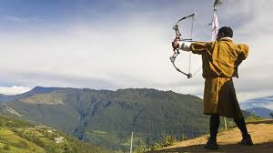
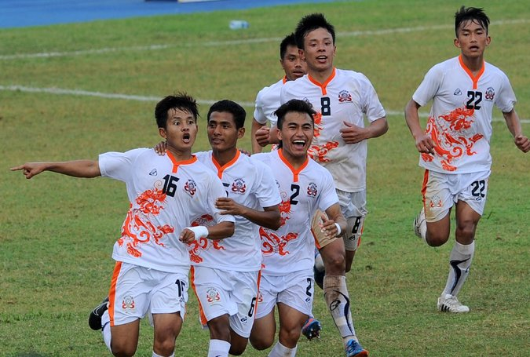

Taktsang Monastery also recognized as Tiger’s Nest in Paro is one of the holiest places in Bhutan. The monastery is mounted on a high granite cliff and was established for meditation. The monastery is perched on a rocky ledge with a sheer drop of nearly 800m, and overlooks the Paro valley and the river. It is said that in the second half of the 8th century, Guru Padma Sambhava known as the second Buddha in Bhutan, meditated at the spot where the monastery is situated having alighted there on the back of a flying tigress. It is also an ideal place for a short trek.
Age Range: Appropriate for all agesThimphu, one of the culturally must see places in Bhutan, is charming capital city nestled in the Himalayas with the beautiful sights of the Chuu River flowing through it. Interestingly, it is the only city in the world with no traffic lights. Thimphu has retained its culture and old world charm as modern development is closely monitored and new buildings can be built only in Bhutanese style and up to a certain height.
Paro the foremost must see place in Bhutan, is a gorgeous beautiful valley, surrounded by lush green rice fields. Paro is a historic town with many sacred sites and historical buildings scattered through the area. Along with Jakar and Punakha, Paro forms the ‘golden triangle’ of popular tourist destinations in Bhutan. Likewise, craggy mountain hills and undisturbed serene beauty, the clean air and peaceful atmosphere make it a must visit place in Bhutan. In Paro, Rinpung Dzong mostly attracts the visitor. Rinpung Dzong is one of the finest examples of a Bhutanese monastery. The Dzong hosts the Paro Tsechu i.e festival of masks. Beyond this, National Museum of Paro holds the visitors in Paro. The museum exhibits rich stamp collections, slate carvings, Thangka paintings, prehistoric items, jewellery, traditional weapons and other articles reflecting Bhutanese culture.
Phuentsholing, another must visit place in Bhutan, is a small town with clean environment. The chief tourist attractions of Phuentsholing are Amo Chuu, the Crocodile Breeding Center, Chukha Hydrothermal Project, the gate at the border (called Bhutan Gate) and Karbandi Monastery. The natural beauty of Phuentsholing forcefully captivates you. It is perfect place to visit for those people who love nature and want to remain in solitude.


Bhutanese cuisine employs a lot of red rice (like brown rice in texture, but with a nutty taste, the only variety of ricethat grows at high altitudes), buckwheat, and increasingly maize. Buckwheat is eaten mainly in Bumthang, maize in the Eastern districts, and rice elsewhere.
Vajrayana is also known as Tantric Buddhism, Tantrayana,Mantrayana, Secret Mantra, Esoteric Buddhism and the Diamond Way or Thunderbolt Way, is a complex and multifaceted system ofBuddhist thought and practice which has evolved over several centuries. According to Vajrayana scriptures, the term Vajrayana refers to one of three vehicles or routes to enlightenment, the other two being theSravakayana (also known as the Hinayana) and Mahayana. Founded by Indian Mahasiddhas, Vajrayana subscribes to Buddhisttantric literature
There are two dozen languages of Bhutan, all members of the Tibeto-Burman language family except for Nepali, which is an Indo-Aryan language, and Bhutanese Sign Language. Dzongkha, the national language, is the only language with a native literary tradition in Bhutan, though Lepcha and Nepali are literary languages in other countries. Other non-Bhutanese minority languages are also spoken along Bhutan's borders and among the primarily Nepali-speaking Lhotshampa community in South and East Bhutan.
The music of Bhutan is an integral part of its culture and plays a leading role in transmitting social values. Traditional Bhutanese music includes a spectrum of subgenres, ranging from folk to religious song and music. Some genres of traditional Bhutanese music intertwine vocals, instrumentation, and theatre and dance, while others are mainly vocal or instrumental. The much older traditional genres are distinguished from modern popular music such as rigsar.
Archery, the national sport, is played internationally as well as domestically using modern equipment, and the kingdom maintains an Olympic archery team. Football is the most popular sport in Bhutan, and Bhutanese football and futbal teams compete at national, international, and Olympic levels.

The Bhutanese cricket team is the team that represents the country of Bhutan in international cricket matches.
The Bhutan national football team represents Bhutan in international men's football. The team is controlled by the governing body for football in Bhutan, the Bhutan Football Federation (BFF), which is a member of the Asian Football Federation and the regional body the South Asian Football Federation (SAFF). Bhutan play their home games at the national stadium, Changlimithang. It is one of the younger national teams in the world having played its first match in 1982.

Bhutan to host the AFC Cup Playoff Qualifiers
Druk United FC will play Mongolia and Pakistan when Bhutan hosts its first AFC Cup Playoff Qualifiers for Group-A from August 11 to 15 at the Changlimithang stadium in Thimphu. As the winner of last year’s national league, Druk United got into the Kings Cup 2014 and will join 2016 AFC CUP Qualifiers.
The Bhutan national men's football team represents Bhutan in international men's football. The team is controlled by the governing body for football in Bhutan, the Bhutan Football Federation, which is currently a member of the Asian Football Federation and the regional body the South Asian Football Federation. Bhutan play their home games at the national stadium, Changlimithang. It is one of the younger national teams in the world having played its first match in 1982. The team are currently one of the very weakest in the world and are, as of 17 July 2014 ranked 46th and last in the Asian Football Confederation with zero points[1] and 208th and joint last globally in the FIFA World Rankings with San Marino on zero points. Their highest ranking achieved was 187th, which they last reached in December 2008 following their semi-final performance in the 2008 SAFF Championship.[1] From that high point, they slipped down the rankings to last place in December 2012 to join San Marino and the Turks and Caicos Islands in 207th. They have remained rooted to the bottom ever since, having lost all their competitive fixtures since then and fell to 208th place following the admission to FIFA of South Sudan in July 2014. The team are also ranked extremely low on the all time Elo ratings at 231st out of 234. The only FIFA affiliated nation below them are American Samoa, with the other two spots taken by the Northern Marianas Islands and Palau. Despite being one of the weakest national teams of all time, they have, as results show below, never been beaten at home and indeed, have yet to concede a goal in an official international at Changlimithang.
{kind=link}
{kind=link}
{kind=link}